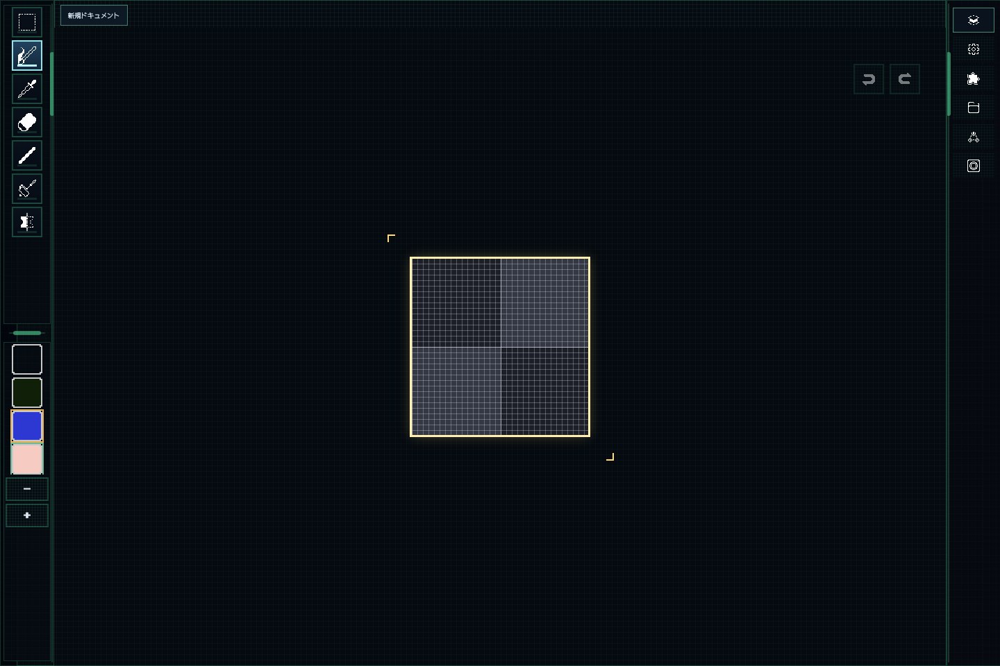

1. 開く
ブラウザでPiXiEEDrawを開きます。登録不要なので、思いついた時にそのまま始められます。
pixel art tool
PiXiEEDrawは、登録不要でブラウザだけで使えるドット絵作成ツールです。無料のドット絵メーカーを探している人が、スマホやPCからすぐ描き始めて、そのままアニメーションやPNG/GIF保存まで進められます。
quick steps

ブラウザでPiXiEEDrawを開きます。登録不要なので、思いついた時にそのまま始められます。

ペン、消しゴム、塗りつぶしを切り替えながら、ドット絵を少しずつ作っていきます。

フレームを追加すると、動くドット絵も作れます。2枚からでもアニメーションを試せます。

完成したらPNGやGIFで保存します。ブラウザ上で作って、そのまま書き出しまで進められます。
why this page
PiXiEEDrawは、検索で来た人が「何ができるか」「今すぐ使えるか」「保存やアニメーションまで進めるか」を短時間で判断できるようにまとめています。
first try
features
use cases
faq
使えます。PiXiEEDrawは登録不要で、ブラウザを開くだけですぐドット絵制作を始められます。
できます。描いたドット絵はPNGやGIFで保存できます。
使えます。フレームを追加してアニメーションを作り、動くドット絵として書き出せます。